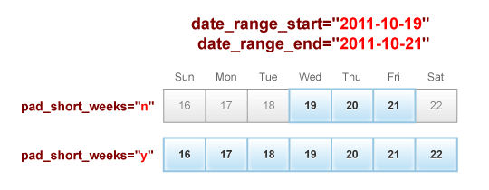

The Calendar:Cal loop is the workhorse behind the Calendar module. It can do almost anything you want it to do. In a nutshell, it outputs calendar data in a variety of formats.
{exp:calendar:cal} content {/exp:calendar:cal}
Parameters
The following parameters are available for use:
- author_id
- site
- category
- calendar_id
- calendar_name
- dynamic
- event_id
- event_name
- event_limit
- event_offset
- date_range_start
- date_range_end
- show_days
- show_weeks
- show_months
- show_years
- first_day_of_week
- pad_short_weeks
- paginate
- enable
author_id=
author_id="{segment_3}"
Allows you to filter your event results by the member(s) that authored them.
site=
site="default_site"
If using MSM, you can specify a Site short name in this parameter to filter entries down to that site.
category=
category="12|15"
This parameter allows you to filter your results by events that belong to specific categories. You can specify a category ID or a category url_title. You can hardcode the value, pass it through an embed, or grab it from the URI. Seperate multiples with the pipe character.
calendar_id=
calendar_id="1|3"
This parameter allows you to display specific calendars by specifying their entry ID(s). You can hardcode a calendar ID, pass it through an embed, or grab it from the URI. Seperate multiples with the pipe character.
calendar_name=
calendar_name="soccer|baseball|dodgeball"
This parameter allows you to display specific calendars by specifying their short_names (entry url_title). You can hardcode a short_name, pass it through an embed, or grab it from the URI. Seperate multiples with the pipe character.
dynamic=
dynamic="no"
This parameter allows you to enable/disable this template tag from looking into the URI for entry ID's or url titles. This is OFF by default. To enable, add this parameter and specify yes.
event_id=
event_id="23|77"
This parameter allows you to display specific events by specifying their entry ID(s). You can hardcode an event ID, pass it through an embed, or grab it from the URI. Seperate multiples with the pipe character.
event_name=
event_name="best_event_evar|christmas|pie_day"
This parameter allows you to display specific events by specifying their short_names (entry url_title). You can hardcode a short_name, pass it through an embed, or grab it from the URI. Seperate multiples with the pipe character.
event_limit=
event_limit="5"
This parameter lets you limit the number of events and occurrences to be displayed. Default is unlimited.
event_offset=
event_offset="1"
This parameter lets you offset the results of events and occurrences displayed. For example, if you'd like the first result to be skipped from the results, specify a value of 1.
date_range_start=
date_range_start="2010-01-31 @ 8:00 AM"
Limits output to events on or after this date. If not specified, this value defaults to Today. Both standard and easy-to-use text date formatting apply to this parameter.
date_range_end=
date_range_end="2010-02-14 @ noon"
Limits output to events on or before this date. If not specified, this value defaults to Today. Both standard and easy-to-use text date formatting apply to this parameter.
show_days=
show_days="14"
Specifies the number of days to show going forward from date_range_start, or backward from date_range_end. If set to a value like 1, it will show the remainder of today only (as opposed to a 24hr period). If set to a value like 3, it will show remainder of today +2 days. Used in conjunction with either date_range_start or date_range_end parameters, and used in place of the one not used.
show_weeks=
show_weeks="3"
Specifies the number of weeks to show going forward from date_range_start, or backward from date_range_end. If set to a value like 1, it will show the remainder of the current week only (as opposed to a 7 day period). If set to a value like 3, it will show the remainder of the current week +2 weeks. This respects the first_day_of_week parameter. So if today is Thursday, March 10, and your date_range_start parameter is set to today and show_weeks parameter is set to 1, it will show events from Thursday, March 10 to Saturday, March 12. If you were to use the date_range_end parameter set to today and show_weeks parameter is set to 1, it will show events from Sunday, March 6 to Thursday, March 10. Used in conjunction with either date_range_start or date_range_end parameters, and used in place of the one not used.
show_months=
show_months="6"
Specifies the number of months to show going forward from date_range_start, or backward from date_range_end. If set to a value like 1, it will show the remainder of the current month only (as opposed to a 30/31 day period). If set to a value like 3, it will show the remainder of the current month +2 months. So if today is March 11, and your date_range_start parameter is set to today and show_months parameter is set to 1, it will show events from March 11 to March 31. If you were to use the date_range_end parameter set to today and show_months parameter is set to 1, it will show events from March 1 to March 11. Used in conjunction with either date_range_start or date_range_end parameters, and used in place of the one not used.
show_years=
show_years="2"
Specifies the number of years to show going forward from date_range_start, or backward from date_range_end. If set to a value like 1, it will show the remainder of the current year only (as opposed to a 365 day period). If set to a value like 3, it will show the remainder of the current year +2 years. So if today is March 11, 2011, and your date_range_start parameter is set to today and show_years parameter is set to 1, it will show events from March 11, 2011 to December 31, 2011. If you were to use the date_range_end parameter set to today and show_months parameter is set to 1, it will show events from January 1, 2011 to March 11, 2011. Used in conjunction with either date_range_start or date_range_end parameters, and used in place of the one not used.
first_day_of_week=
first_day_of_week="0"
By default, Calendar considers Sunday as the first day of the week. This parameter allows you to override that by specifying the numeric value of a weekday (ex: Sunday = 0, Monday = 1, etc).
pad_short_weeks=
pad_short_weeks="n"
You'll likely need to have this parameter set to n in the event you're trying to display anything other than a typical calendar display. When set to n, weeks won't be "padded" to the nearest first day of the week and last day of the week, as Calendar does this by default for the sake of properly outputting and formatting a calendar.
So for example, using the date_range_start and date_range_end parameters, if your code looks like this:
date_range_start="2011-10-19" date_range_end="2011-10-21"
With pad_short_weeks parameter NOT specified, Calendar will automatically display the entire week range (2011-10-16 - 2011-10-22). With pad_short_weeks="n", Calendar will just display the selected range (2011-10-19 - 2011-10-21).

paginate=
paginate="both"
This parameter allows you to control where the pagination will display. Options are top, bottom, or both. Used in conjunction with the paginate variable pair.
enable=
enable="categories|category_fields|custom_fields|member_data|pagination"
By default, this function does not grab any advanced weblog data in order to improve performance. However, opposite to the EE Channel module's disable parameter, this parameter allows you to enable some or all of those features when you need them. Seperate multiples with the pipe character. Options are: categories, category_fields, custom_fields, member_data and pagination.
Variables
Most of the variables listed in Calendar:Events are available for use within the events variable pair. Additionally, these exist as well:
- date
- event_count
- event_total
- year_event_count
- year_event_total
- prev_year
- next_year
- month_event_count
- month_event_total
- prev_month
- next_month
- week_event_count
- week_event_total
- prev_week
- next_week
- day_of_week
- day_of_week_one
- day_of_week_short
- day_of_week_N
- day_of_week_number
- day_event_count
- day_event_total
- prev_day
- next_day
- hour_event_count
- hour_event_total
- hour_switch
- calendar_ignore_title
- calendar_ignore_url_title
date
{date format="%F %j, %Y"}
Displays the given date, formatted using EE-style format characters. Available only within the display_each_year, display_each_month, display_each_week, display_each_day, display_each_hour variable pairs.
event_count
{event_count}
This variable outputs the display order number for each event result in the given timeframe. Available only within the events variable pair.
event_total
{event_total}
This variable outputs the total amount of events outputted for the given timeframe. Available only within the events variable pair.
year_event_count
{year_event_count}
This variable outputs the display order number for each event result for a given year. Available only within the display_each_year variable pair.
year_event_total
{year_event_total}
This variable outputs the total amount of events outputted for a given year. Available only within the display_each_year variable pair.
prev_year
{prev_year format="%Y"}
Displays the previous year, formatted using EE-style format characters. If format="" is not specified, it will parse as YYYY (ex: 2008). Available only within the display_each_year variable pair.
next_year
{next_year format="%Y"}
Displays the next year, formatted using EE-style format characters. If format="" is not specified, it will parse as YYYY (ex: 2010). Available only within the display_each_year variable pair.
month_event_count
{month_event_count}
This variable outputs the display order number for each event result for a given month. Available only within the display_each_month variable pair.
month_event_total
{month_event_total}
This variable outputs the total amount of events outputted for a given month. Available only within the display_each_month variable pair.
prev_month
{prev_month format="%F %Y"}
Displays the previous month, formatted using EE-style format characters. If format="" is not specified, it will parse as MM (ex: 02). Available only within the display_each_month variable pair.
next_month
{next_month format="%F %Y"}
Displays the next month, formatted using EE-style format characters. If format="" is not specified, it will parse as MM (ex: 04). Available only within the display_each_month variable pair.
week_event_count
{week_event_count}
This variable outputs the display order number for each event result for a given week. Available only within the display_each_week variable pair.
week_event_total
{week_event_total}
This variable outputs the total amount of events outputted for a given week. Available only within the display_each_week variable pair.
prev_week
Week beginning {prev_week format="%F %j, %Y"}
Displays the starting day date for the previous week, formatted using EE-style format characters. If format="" is not specified, it will parse as the numeric week number - WW (ex: 50). Available only within the display_each_week variable pair.
next_week
Week beginning {next_week format="%F %j, %Y"}
Displays the starting day date for the next week, formatted using EE-style format characters. If format="" is not specified, it will parse as the numeric week number - WW (ex: 52). Available only within the display_each_week variable pair.
day_of_week
{day_of_week}
Displays the full text of the day of the week (ex: Thursday). Available only within the display_each_day_of_week variable pair.
day_of_week_one
{day_of_week_one}
Displays the first letter of the day of the week (ex: Wednesday = W). Available only within the display_each_day_of_week variable pair.
day_of_week_short
{day_of_week_short}
Displays a shortened version of the day of the week (ex: Fri). Available only within the display_each_day_of_week variable pair.
day_of_week_N
{day_of_week_N}
Displays the numeric day of the week (ex: Monday = 1, Sunday = 7). Available only within the display_each_day_of_week variable pair.
day_of_week_number
{day_of_week_number}
Displays the numeric day of the week (ex: Sunday = 0, Saturday = 6). Available only within the display_each_day_of_week variable pair.
day_event_count
{day_event_count}
This variable outputs the display order number for each event result for a given day. Available only within the display_each_day variable pair.
day_event_total
{day_event_total}
This variable outputs the total amount of events outputted for a given day. Available only within the display_each_day variable pair.
prev_day
{prev_day format="%F %j, %Y"}
Displays the previous day, formatted using EE-style format characters. If format="" is not specified, it will parse as DD (ex: 29). Available only within the display_each_day variable pair.
next_day
{next_day format="%F %j, %Y"}
Displays the next day, formatted using EE-style format characters. If format="" is not specified, it will parse as DD (ex: 31). Available only within the display_each_day variable pair.
hour_event_count
{hour_event_count}
This variable outputs the display order number for each event result for a given hour. Available only within the display_each_hour variable pair.
hour_event_total
{hour_event_total}
This variable outputs the total amount of events outputted for a given hour. Available only within the display_each_hour variable pair.
hour_switch
{hour_switch="one|two"}
This variable allows you to switch a CSS class back and fourth for all outputed results. Available only within the display_each_hour variable pair.
calendar_ignore_title
{calendar_ignore_title}
Due to the way Calendar works, it can cause trouble when trying to parse data with other addons (such as displaying related entries). By specifying this variable, it'll parse the equivelant of {title} and tell Calendar to leave the variable alone.
calendar_ignore_url_title
{calendar_ignore_url_title}
Due to the way Calendar works, it can cause trouble when trying to parse data with other addons (such as displaying related entries). By specifying this variable, it'll parse the equivelant of {url_title} and tell Calendar to leave the variable alone.
Variable Pairs
The following variable pairs are available for use:
- display_each_year
- display_each_month
- display_each_week
- display_each_day_of_week
- display_each_day
- display_each_hour
- events
- paginate
display_each_year
{display_each_year}{/display_each_year}
You can display calendar formatting and informational variables within this variable pair.
display_each_month
{display_each_month}{/display_each_month}
You can display calendar formatting and informational variables within this variable pair. Can also be placed within the display_each_year variable pair.
display_each_week
{display_each_week}{/display_each_week}
You can display calendar formatting and informational variables within this variable pair. Can also be placed within the display_each_year and display_each_month variable pairs.
display_each_day_of_week
{display_each_day_of_week}{/display_each_day_of_week}
You can display calendar formatting and informational variables within this variable pair. Can also be placed within the display_each_year, display_each_month and display_each_week variable pairs.
display_each_day
{display_each_day}{/display_each_day}
You can display calendar formatting and informational variables within this variable pair. Can also be placed within the display_each_year, display_each_month and display_each_week variable pairs.
display_each_hour
{display_each_hour}{/display_each_hour}
You can display calendar formatting and informational variables within this variable pair. Can also be placed within the display_each_year, display_each_month, display_each_week and display_each_day variable pairs.
events
{events}{/events}
You can display most of the variables listed in Calendar:Events within this variable pair. Repeats for each event that falls within the relevant range. Can also be placed within the display_each_year, display_each_month, display_each_week, display_each_day_of_week, display_each_day and display_each_hour variable pairs.
paginate
{paginate}Page {current_page} of {total_pages} pages {pagination_links}{/paginate}
Pagination is available for this tag and works just like regular pagination. Used in conjunction with the paginate parameter.
Conditionals
Most of the conditionals listed in Calendar:Events are available for use within the events variable pair. Additionally, these exist as well:
- if calendar_no_results
- if year_is_leap_year
- if day_of_week_is_weekend
- if day_of_week_is_weekday
- if day_in_current_month
- if day_in_previous_month
- if day_in_next_month
- if day_is_today
- if day_is_weekend
- if day_is_weekday
if calendar_no_results
{if calendar_no_results}{/if}
Works just like the regular {if no_results} conditional - displays its contents when there is no results for the given parameters.
if is_leap_year
{if is_leap_year}Leap Year!{/if}
This conditional will displays it's contents if the year is a leap year. Available only within the display_each_year variable pair.
if day_of_week_is_weekend
{if day_of_week_is_weekend}The Weekend!{/if}
This conditional will displays it's contents if the day of the week occurs on the weekend. Available only within the display_each_day_of_week variable pair.
if day_of_week_is_weekday
{if day_of_week_is_weekday}Weekday{/if}
This conditional will displays it's contents if the day of the week occurs on a weekday. Available only within the display_each_day_of_week variable pair.
if day_in_current_month
{if day_in_current_month}This Month!{/if}
This conditional will displays it's contents if the day is within the current month. Available only within the display_each_day variable pair.
if day_in_previous_month
{if day_in_previous_month}Previous Month!{/if}
This conditional will displays it's contents if the day is within the previous month. Available only within the display_each_day variable pair.
if day_in_next_month
{if day_in_next_month}Next Month!{/if}
This conditional will displays it's contents if the day is within the next month. Available only within the display_each_day variable pair.
if day_is_today
{if day_is_today}Today!{/if}
This conditional will displays it's contents if the day happens to be today. Available only within the display_each_day variable pair.
if day_is_weekend
{if day_is_weekend}The Weekend!{/if}
This conditional will displays it's contents if the day occurs on the weekend. Available only within the display_each_day variable pair.
if day_is_weekday
{if day_is_weekday}Weekday{/if}
This conditional will displays it's contents if the day occurs on a weekday. Available only within the display_each_day variable pair.
Examples
For examples for the Monthly Calendar, Weekly Calendar, Daily Calendar, and Mini Calendar, click each of the respective links.
The below code will generate you a simple list of all events happening between today and 6 months from now:
<ul>
{exp:calendar:cal
date_range_start="today"
show_months="6"
pad_short_weeks="n"
}
<li>
<a href="{path='calender/event'}/{event_id}/">
{event_title}
</a>
({event_start_date format="%F %j, %Y"})
</li>
{if no_results}
<li>No Results</li>
{/if}
{/exp:calendar:cal}
</ul>